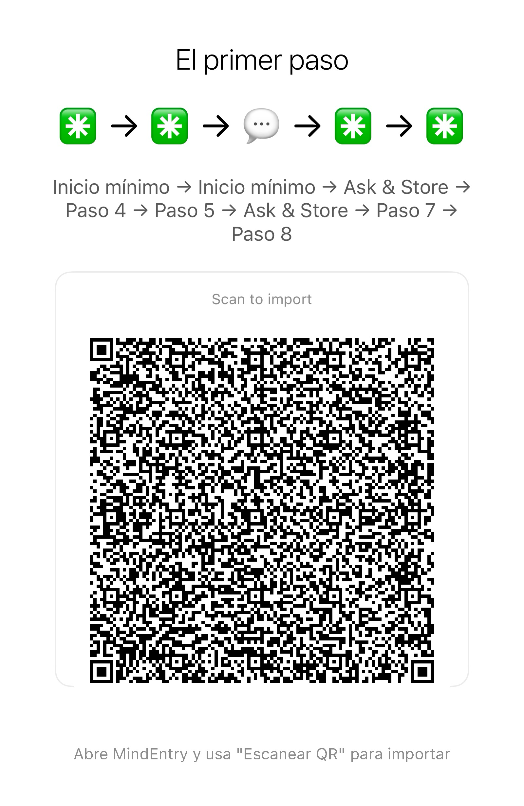

No es optimización personal. Es un reinicio cognitivo.
Pequeños reinicios paso a paso para momentos en los que la mente se sobrecarga, entra en bucle, se bloquea o se queda atascada.
Incluso un método de reinicio puede convertirse en carga cognitiva si tienes que recordar los pasos. CogniHack funciona con MindEntry para que el sistema mantenga la secuencia por ti.
Última actualización: 2026-06-02
La mayoría de los «life hacks» te piden que planifiques mejor, pienses más, te organices más o te optimices a ti mismo.
Pero cuando la mente está sobrecargada, atrapada en bucles, bloqueada o paralizada, pensar más suele empeorar las cosas.
En esos momentos, puede que no necesites consejos. Puede que simplemente necesites que el siguiente paso aparezca delante de ti.
Un CogniHack es una secuencia de reinicio cognitivo que se ejecuta en MindEntry. Sus pasos no utilizan otras aplicaciones de MINDBEBOP.
Puede incluir reinicios sensoriales, pequeñas acciones físicas, métodos de grounding o pasos Stateful como Your Situation y Your Step.
Si la secuencia abre otra aplicación de MINDBEBOP, como MindFlipOut, MindShoutOut, MindZoneOut, MindBackOut, MindEaseOut o MindBackyard, entonces pasa a ser una Recipe.
MindEntry mantiene la secuencia por ti para que no tengas que recordar, organizar ni decidir qué viene después.
Simplemente sigue el siguiente paso visible.
Algunos CogniHacks son Stateful Recipes.
En lugar de requerir todos los detalles por adelantado, pueden preguntar qué es importante en este momento mientras la secuencia está en marcha.
La receta mantiene la estructura. Tú aportas la situación actual.
Esa respuesta puede utilizarse a lo largo del resto de la secuencia.
Un Stateful CogniHack puede preguntar:
Esto evita que tengas que mantener la secuencia de reinicio mental en tu cabeza, al mismo tiempo que le permite adaptarse a la situación real en la que te encuentras.
La situación: Tu cerebro está “buffering”. La ansiedad, los pensamientos en bucle o un bloqueo por TDAH han sobrecargado tu memoria de trabajo, dejando tu mente atrapada dentro de sí misma.
El método 5-4-3-2-1 ya es conocido como técnica de grounding sensorial. Pero cuando la mente está saturada, recordar los pasos puede convertirse en otra carga más.
Es cuando se ejecuta mediante MindEntry cuando se convierte en un CogniHack. Ya no necesitas mantener toda la secuencia en tu cabeza: solo seguir el paso que aparece.
Ejecutarlo como CogniHack:
Importa esta receta en el MindEntry Recipe Runner. Una pantalla, un paso cada vez. Sin necesidad de memorizar la secuencia.
Método 1: Escanear para importar

Método 2: Copiar y pegar el código en MindEntry
La situación: Sabes lo que tienes que hacer, pero no puedes empezar. La tarea parece demasiado grande, demasiado complicada o demasiado pesada. En lugar de comenzar, te descubres desplazándote por contenido, organizando cosas, investigando o pensando en la tarea sin llegar a actuar.
La regla de los 2 minutos suele utilizarse para romper la procrastinación. Pero cuando estás bloqueado, descubrir cómo reducir una tarea puede convertirse en otra tarea más.
Al ejecutarlo en MindEntry, se convierte en un Stateful CogniHack. La estructura permanece igual, pero la tarea actual se proporciona durante la ejecución.
Ejecutarlo como CogniHack:
Importa esta receta en el MindEntry Recipe Runner. Una pantalla, un paso cada vez. Sin necesidad de memorizar la secuencia.
Método 1: Escanear para importar

Método 2: Copiar y pegar el código en MindEntry
Incluso un método de reinicio puede resultar difícil de usar cuando la mente ya está saturada.
Si tienes que recordar el orden, mantener los pasos en la cabeza o decidir “qué hacer después”, el propio método crea una nueva fricción cognitiva.
MindEntry reduce esa fricción manteniendo la secuencia por ti.
Tú solo sigues el siguiente paso visible.
Copyright © 2026 MINDBEBOP — All rights reserved.